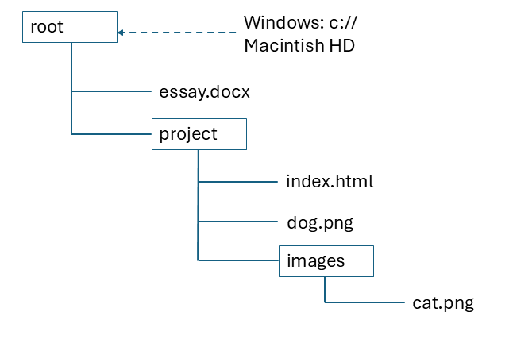
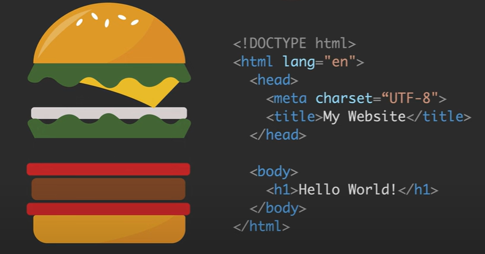

Lists are initially created as either:
- unordered (such as a list of ingredients)
- ordered (such as a list of instructions)
Then individual list items are added. Angela used her cinnamon roll recipe as an example:
Angela's Cinnamon Roll Recipe
Ingredients
For the dough:
- ¾ cup warm milk
- 2 ¼ teaspoons yeast
- ¼ cup granulated sugar
- 1 egg plus 1 egg yolk
- ¼ cup butter
- 3 cups bread flour
For the filling:
- 2/3 cup dark brown sugar
- 1 ½ tablespoons ground cinnamon
- ¼ cup butter
Instructions
- Mix the milk with the yeast, sugar, eggs.
- Melt the butter and add to the mixture.
- Add in the flour and mix until combined into a dough.
- Add in the flour and mix until combined into a dough.
- Knead the dough for 10 minuites.
- Transfer the dough into a large bowl and cover with plastic wrap. Leave it somewhere to rise for 2 hours.
- After the dough has doubled in size, roll it out into a large rectangle.
- Melt the butter for the filling and mix in the sugar and cinnamon.
- Spread the filling onto the dough then roll the dough into a swiss roll.
- Cut the roll into 3cm sections and place flat into a baking tray.
- Pre-heat the oven to 350F or 180C, then bake the rolls for 20-25min until lightly brown.
You can nest a list inside other lists. It's best to code the main list first and then start nesting new lists inside it. It's easier to keep the closing tags in order like this.
- A
- B
- B1
- B2
- B2a
- B2aa
- B2ab
- B2b
- B2c
- B2a
- B3
- B31
- B32
- C
Anchor elements are entered as <a href="www.google.com">Click this link to Google.</a>
In this example the anchor tag has an attribute "href" with a value "www.google.com".
- Here are some tips for attributes:
- Some attributes are local, some are global.
- The attribute 'href' is a hyperlink.
- You can add map links as an attribute. Example: Link to a mountain.
- You can add more than one attribute within any tag, just seperate them with spaces.
- You can start counting from 5 in an ordered list by adding attribute with value as start="5" inside the opening tag.
Here is an anchor elements example counting my favourite Websites from 5 instead of 1.
My top 5 Favourite Websites
We add images by using the self closing img tag: <img src="image-location" alt = "This is a picture"/>
The source attribute (src) locates the picture while the (alt) attribute provides text for screen readers for the visually impaired.
I have inserted a picture I took of the ocean.
You can randomly grab pictures sized 200x200 pixels from lorem picsum. Every time you refresh this page the picture here will change:
And here is my first link to an external animation: I am a Dog Person
I had to create a birthday party invitation using the new skills and link to a crazy location provided by Angela!
It's My Birthday party!
Date: 1st July

What to bring
- Costume (The pool is stunning)
- Drinks (I'll supply cooldrinks and some wine)
- An appetite (There will be lot's to eat)
Where you need to go:
Location is hereThis section explained how computer file paths work. If you consider the following directory structure:
- Absolute - A path starting from your root folder
c:/project/images/cat.png (Windows)
/project/images/cat.png (Mac)
- Relative - useful in web development because if you move an entire folder the links don't change relative to the index.html.
images/cat.png (work down the directory tree index.html file)
./dog.png (stay in current directory)
../essay.docx (go up one level in the directory)
File paths can be:
Here is a project that navigated through a badly arranged directory and matched pictures to descriptions in a neat HTML page.
All the AnimalsEssentially a starting index.html file linking to other html files in the project directory such as "About", "Contact Us", or to other external websites etc.
You can hyperlink to something from an image too:
<a href="www.google.com" <img src="image-location" alt = "google logo" width=100/>

You can pull up the boiler plate in a blank html document by entering ! in the top line.
Angela explained this brilliantly using the analogy of a burger so I've pinched this straight out of her course video.
- The bun represents the complete html page. Everything fits inside it.
The DOCTYPE bit just tells the browser you have used html version 5, and the language is english. - Lettuce - contains the header with the character set and the page title.
- Tomato - encloses the body of the document
- Meat - This is your real content.
I ended the year with a brief introduction to hosting my projects on the internet.
- Log in to your Github account.
- Give your project a name.
- Add a description
- Select "Public"
- Tick the box to add a 'Readme' file
- Create
- Add file -> Select and upload all of the files in your project directory, but NOT the directory itself (just the content).
- Commit changes (might take 10 minutes)
- Settings -> Pages -> Change branch to 'Main' and save.
- In 'Pages' the web address will pop up (maybe quick, maybe 10 minutes).
- Click 'Visit site'.
With the tools I had learnt in just two weeks before a big family Christmas I was already able to see myself building a simple website. In fact, I did exactly that while on holiday, posting a collection of special photos from all of our family Christmases to a website for everybody to enjoy on Christmas day. It was truly rough and ready, but it brought back a lot of special memories!